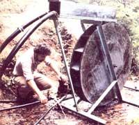

A Home-Sized Waterwheel
If you're stuck (as we were) trying to get some water "from here to there", you may just find (as we did) that the easiest practical solution is to build ...
September/October 1981
"Water taken in moderation cannot hurt anybody."
Mark Twain
There's no doubt that MOTHER's gardeners, Kerry and Barbara Sullivan, were pleased when we hooked up a Jacobs windplant (as reported in issue 69, page 180) to provide their yurt with electricity. But the truth is that the two horticulturists were even happier with a more recent gift from MOM 's research department ...running water!
Now most of us take the availability of that precious liquid so much for granted that we far exceed Mr. Twain's recommended temperance in water usage. Barbara and Kerry, though, have learned to be downright miserly with the vital fluid ...because they've had to hand-tote all their drinking and washing water ever since they took over the Eco-Village gardens a couple of years ago. Mind you, that state of affairs wasn't due to any lack of effort. MOTHER's crew of researchers have, on more than one occasion, experimented with systems for feeding water into the circular building. But to tell the truth, none of the sophisticated attempts our staffers devised worked very well in that specific application. Amazingly enough, though, the situation was (finally) remedied last spring when Dennis Burkholder and Robyn Bryan went back to the drawing board-and looked back to the past -to devise a simple, easy-to-build, and trouble-free ...
WATERWHEEL!
That's right ...Dennis and Robyn have solved the problem of pumping the precious liquid by using an adaptation of the familiar paddle wheel, and a miniature one at that. The 48"-diameter device-made out of 314" marine plywood and pressure-treated 1 X 6 board-drives a recycled shallow-well pump which, in turn, forces water up a hill to the 1,000-gallon cistern above the yurt. The mini-wheel is small but effective: It pushes one gallon of water a minute into the holding tank. At that rate the setup delivers over 1,000 gallons a day (tar more than most families use), so there's always plenty of water in the cistern. And since the storage tank stands 35 feet above the yurt, there's always plenty of pressure at the building's new plumbing fixtures, too.
CAN PURE WATER SPRING FROM A MUDDY FOUNTAIN?
The key to our system is the fact that it uses water from one source to pump water from another source ...or, as Dennis Burkholder puts it, "We're moving clean water with dirty water." The little stream that now powers the waterwheel, while only a few yards away from the yurt, is an open waterway ...and the local building codes wouldn't allow anyone to draw drinking liquid from such an easily contaminated source. So the clean water supply had to come from a capped spring 740 feet away! One-inch plastic pipe draws water from this trickling source down to the waterwheel's pump, which-pushed by the force provided by the open, "dirty" streamlifts the pure liquid 50 feet up from the wheel to the storage tank. (This feat isn't quite as impressive as it sounds ...because the original spring is 35 feet lower than the cistern, so the lifted liquid has a 15-foot "falling" head start!)
The waterwheel is built in the classic "overshot" style (that is, a flume shoots water to the top of the wheel, where the fluid falls into built-in "buckets" ...thus forcing the rig to turn). To get the power providing liquid into "overshot position", Dennis and Robyn ran a pair of 1112 "-inch plastic pipelines 50 feet up the stream. Those conduits capture water at an altitude slightly above the top of the wheel and dump it-at a rate of approximately 45 gallons per minute (the flow, of course, varies with rainfall)-right at the top of the bucketed double disk.
TAPPING THE CYCLE
The design of the water-pumping system is pretty straightforward. Its most complex element is the wheel itself, and even that has an appealing symmetric simplicity. To construct the rotating unit, Dennis and Robyn first cut two 48"-diameter circles out of 314" marine-grade plywood. They then scribed pencil lines that divided each "pie" into 16 equal segments. Each point at which one of those lines met the perimeter of the circle marked the location of the outside edge of one of the wheel's 16 watercatching scoops. (And a chord drawn between any adjacent pair of these points measures 9-3/8 ".)
Our inventive builders reasoned that the water would exert maximum turning force on the wheel if every bucket held its contents as long as possible. The dividing boards, therefore, needed to be laid out so that they angled steeply up toward the flume's spillway. (That way, an individual container would rotate more than one-third of a revolution before its lower side became horizontal and dumped out its contents.)
To set the desired slope for each bucket, Dennis and Robyn placed a framing square so that one side of the tool lay on one of the 16 radial lines, while its other side intersected the outer tip of the secondradial line back on the wheel. The board was placed along the line that was thus formed, to connect the two radii (see "Wheel Layout" diagram). Each 1 X 6 section thereby formed a 90° angle with a radial line at its inner end, and worked out to be 19-112" long. In addition, since every board overlapped a neighboring plank, it served as both the front side of one bucket and the back piece of the next!
After all the boards had been laid in place and checked for alignment, the two men glued, nailed, and painted the assembly. In addition, Dennis and Robyn added a drain hole-between the buckets and the wheel's centerpoint-to release any water that just might manage to sneak through to the interior of the spinner.
Our clever constructionists next assembled the axle for the unit. A 3/4" floor flange was fastened to each of the wheel's sides-at the centerpoints-with four all thread rods and nuts, then a 3/4" shaft of round steel stock was slipped through the wheel. The rod is supported by two sealed 314" pillow-block bearings secured to the structure's frame. Between the bearing and the flange on one side of the wheel, Dennis and Robyn inserted a threaded 3/4" to 112" brass male-to-female reducing bushing. (The men bored out the inside threads of this piece so the shaft could run through the bushing's center.) On the other side of the wheel, they welded a 2" length of 314" nipple ...which screws into one of the floor flanges. This last addition allows the wheel to be removed easily from the shaft when necessary-for repairs and routine maintenance.
The frame itself was welded together out of scrap pieces of angle iron that the fellows found lying around the shop. Its shape wasn't critic al ... but Dennis and Robyn did make sure the support structure was stout enough to hold the wheel assembly above the stream bed.
The shallow-well pump was attached near the base of the frame. Then, in order to gear the pump/wheel assembly to assure that each revolution of the waterwheel would force several back-and-forth strokes of the pump's single piston, a 9" pulley (which came with the double-valve pump) was installed on the waterwheel's shaft ...a little 2-1/2" pulley was put in its place ...and the two were connected with a V-belt.
A simple wooden box flume-with a hole cut out of its bottom to serve as a spillway was erected over the wheel, and the 1" inlet and outlet drinking-water lines were hooked up to the pump. Then the 1-1/2" "dirty water power" lines were set in the flume's entrance, and-like the wheels of a slow-starting locomotive-the simple machine began to turn. The trusty water pumper has been rotating steadily ever since!
LITTLE WHEEL KEEPS ON TURNING
MOM's mini-waterwheel has performed like a pro and required remarkably little maintenance ...which is more than could be said of our earlier attempts at "watering" the yurt. The 1/3-HP gasoline-fueled generator we initially hooked up, for instance, needed all too frequent refueling ...allowed water pressure to build up against the cistern's check valves when the engine wasn't running (more than once, those valves leaked a bit under such circumstances and the cistern began to drain!) ...and was noisy to boot! After that uninspiring effort, our homestead plumbers tried to use a diaphragm ram pump, but the sensitive machine was continually becoming clogged or-worse yet -getting holes in its elastic "skin"!
By contrast, the little wheel has proved to be quite easy to care for. Once every few weeks, Barbara or Kerry will check the tension on the fan belt, clean any debris out of the screens at the top of the wheel's "power pipes", and-perhaps-lubricate the pump or bearings.
The uncomplicated project was inexpensive as well: The entire assembly-excluding the lengths of plastic pipe-cost MOM's researchers less than $100. Other folks who would like to duplicate our efforts should be able to build an equally economical waterwheel ...if they can scrounge up a small shallow-well, double action pump. These little water-pushers used to be quite common (Myers and Everready were two popular brands), but the few new ones currently available are costly. (Sears, for instance, prices its 1/3-HP pump-with tank and motor-at more than $250!) Abandoned pumps can frequently be obtained at a local junkyard, though, which is where our staffers acquired their recycled gem ...for $20.
In short, MOM's water-pumping system is a reasonably priced, low-technology setup that could help anyone who has a source of usable "power" water, a supply of fresh drinking water, and the need to give that potable liquid a bit of an uphill boost. MOTH ER's home-scale waterwheel has too elementary a design to score high marks in mechanical efficiency, but its very simplicity is what makes it so easy to construct. And make no mistake about it, the water pumper does work ...Barbara Sullivan figures that enough water is now being fed to the" cistern to supply two households' needs easily.
But, you know, that recitation of practical virtues ignores one of the rolling water-pusher's best intangible assets ...the darned little thing's cute!
|
 Staff Photos To increase the pumping rate of |
As the liquid rushing out this open |
The steeply slanted buckets don't |
 |
|
|